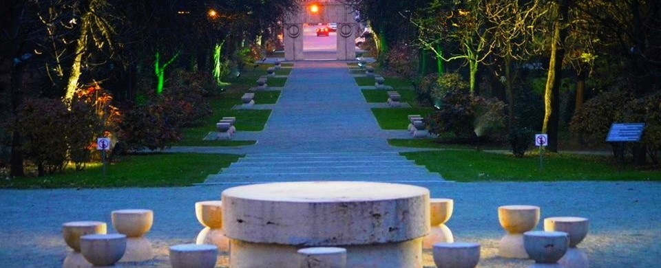

Municipiul Târgu Jiu și-a luat numele de la
vijeliosul râu Jiu de care este străbătut
de la nord la sud și care, în decursul timpului, și-a mutat albia de la Dealul Prejbei înspre apus,
formând trei terase care constituie teritoriul de azi al localității. Înainte de cucerirea Daciei de
către romani, localitatea era un sat aflat pe un teritoriu cu insule și păduri, situate între cursurile
Jiului, Hodinăului, Voivodiciului, Putnei și Paschiei. El oferea astfel un bun adăpost locuitorilor, pe
care îi apăra împotriva năvălirilor din afară.
Imagine dinspre Coloana Infinitului
Aici se intersectau importante drumuri comerciale care făceau legătura între Dunăre, Drobeta
Turnu-Severin și Transilvania cu un centru roman de pe Olt. În preajma sa staționau cohorte romane,
încartiruite în așezări fortificate. În timpul războaielor de cucerire a Daciei, o parte din armata
romană, conform mărturiilor istorice, a trecut prin localitate. Eruditul om de cultură gorjean Alexandru
Ștefulescu susține într-o lucrare a sa despre Târgu Jiu, că în vremea romanilor localitatea era un
vicus, o stațiune comercială. Săpăturile efectuate pentru construirea liniei ferate Târgu Jiu - Rovinari
au scos la iveală în partea de sud-est a orașului un mozaic, țiglă și cărămizi romane, precum și
ceramică asemănătoare celei descoperite în apropierea castrului roman de la Bumbești-Jiu.